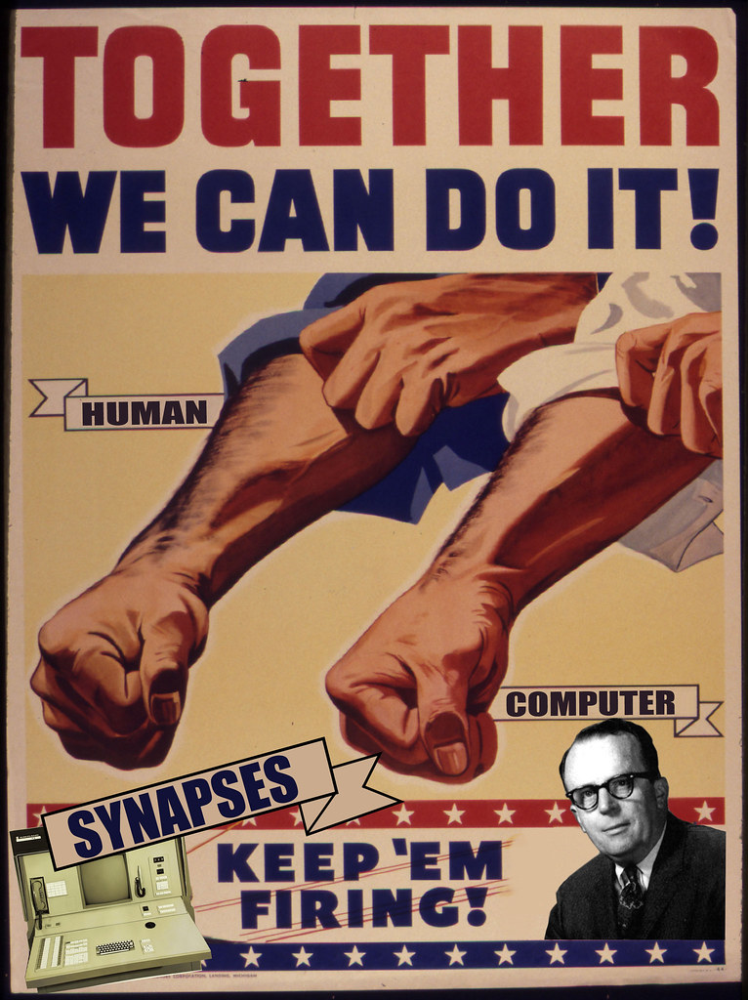
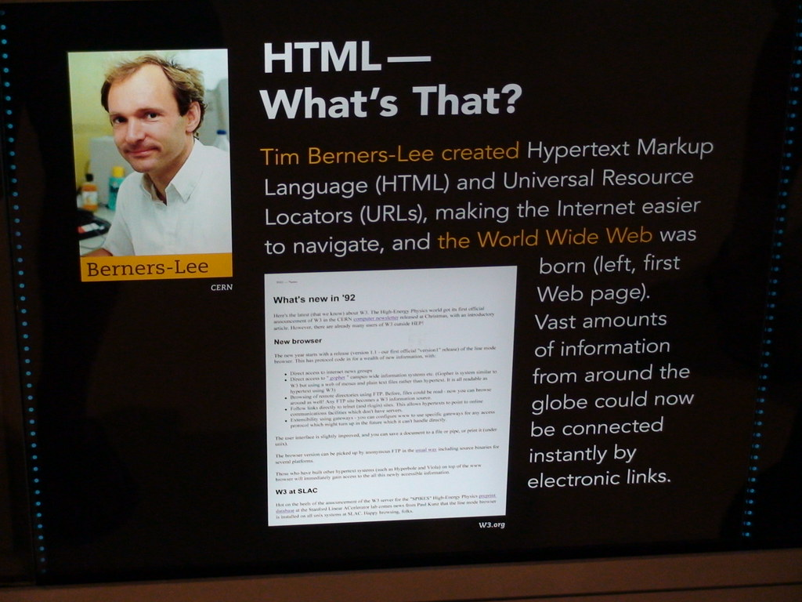

Al Gore with Vinton Serf. These two men made it ok for you and I to work together via the internet.
The man who made it all become known as a Network.
Al Gore with Vinton Serf. These two men made it ok for you and I to work together via the internet.
Al Gore with Vinton Serf. Al Gore helped the Internet remain prosperous for individuals.
We will never forget the @ symbol.

Tim B. Lee who is the mastermind behind HTML. His work allowed all of us to use the internet and earn an income because of it.
Cited Work: Canvas, NJIT "Al Gore" by campuspartymexico is licensed with CC BY 2.0. To view a copy of this license, visit https://creativecommons.org/licenses/by/2.0/ https://creativecommons.org/licenses/by-sa/2.0/ https://live.staticflickr.com/6065/6138873819_be4fa29be7.jpg https://live.staticflickr.com/3038/2791016643_0a1e588d35_b.jpg https://image.slidesharecdn.com/mac129historyofinternet-121009080128-phpapp02/95/med122-history-of-internet-6-638.jpg?cb=1412327153 https://images.unsplash.com/photo-1632770817612-99149e09259f?ixlib=rb-1.2.1&ixid=MnwxMjA3fDB8MHxwaG90by1wYWdlfHx8fGVufDB8fHx8&auto=format&fit=crop&w=1172&q=80